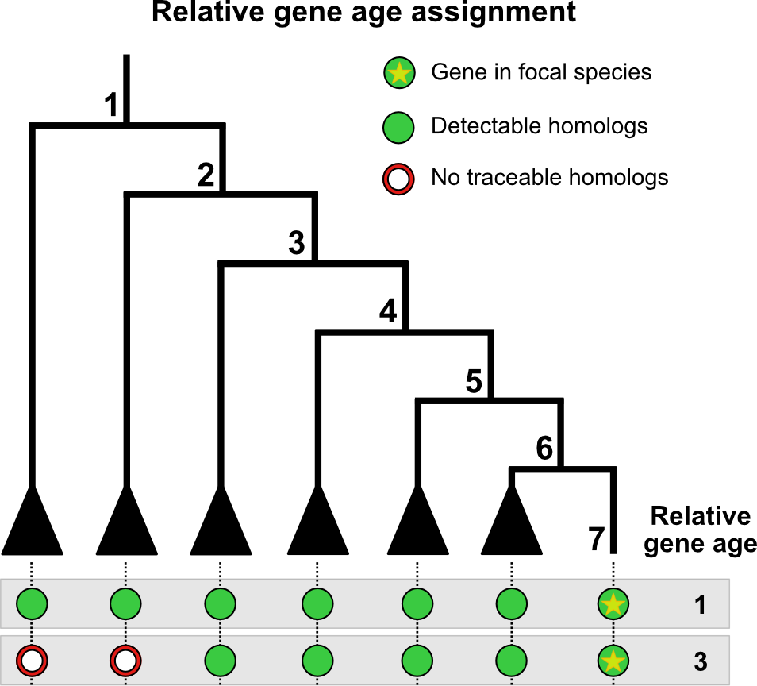

What is genomic phylostratigraphy?
Genomic phylostratigraphy is a method to date the evolutionary
emergence of a given gene (i.e. gene age inference),
typically done for all genes in a genome. In practice, one performs
homology searches against a taxonomically-informed database such as the
NCBI NR, and then parse the output to obtain an evolutionary-informed
readout.

Overview of gene age inference. Here, we are searching two genes from the genome of interest against a taxonomically-informed database. The first gene is assigned as relative age 1 since homologues can be found as far as node 1. The second gene is assigned as relative age 3 since homologues can be found only up to node 3. Adapted from Barrera-Redondo et al., 2023.
The output can be fed into myTAIv2 and, combined with
expression data, is used to compute the transcriptome age index
(TAI). More specifically, gene age inference generates a
table storing the gene age in the first column and the corresponding
gene id of the organism of interest in the second column. This table is
named phylostratigraphic map (or phylomap).
For quick users, there are several recent software developed for gene
age inference such as GenEra
and oggmap.
Example GenEra workflow
Assuming that the user has installed GenEra.
Download a taxonomically-resolved protein sequence database such as the NCBI nr, as well as prot.accession2taxid and taxonomy dump from the NCBI.
Run
diamond makedb.
diamond makedb \
--in nr \
--db nr \
--taxonmap prot.accession2taxid \
--taxonnodes taxdump/nodes.dmp \
--taxonnames taxdump/names.dmp- Run
GenEra.
But we hope you stay for the debate/discussion!
Gene age information in TAI
TAI (Domazet-Lošo &
Tautz, 2010) is calculated as:
where is the expression level of gene at a given sample (e.g. a biological replicate for a developmental stage), and is the evolutionary age of gene .
For developmental time-course data,
can be grouped for each stage (if replicate data exists) and compared
across developmental stages to obtain the overall TAI profile.
For pairwise comparisons (see 📈),
can be grouped as one of the conditions to be compared.
For single cell data, (see 📊),
is the TAI for a given cell or cell type (if pseudo-bulked).
Thus, TAI represents the expression-weighted mean gene age. Accurate inference of gene age that scales to all genes in the genome is thus key.
The debate
Despite its simplicity, since the first studies (Domazet-Loso et al., 2007), the method and concept underlying genomic phylostratigraphy has been subject to intense discussions (Capra et al., 2013; Altenhoff et al., 2016; Liebeskind et al., 2016; Domazet-Loso et al., 2017; Yin et al., 2018; Casola 2018; Weisman et al., 2020; Futo et al., 2021; Weisman et al., 2022; Barrera-Redondo et al., 2023; etc.).
The crux of the discussion focuses on the homology search bias, though several studies have also noted database bias (e.g., species representation and contamination) and evolutionary assumptions (e.g., Dollo parsimony).
Homology search bias
The first phylostratigraphy studies used BLASTp, which
performs pairwise protein sequence alignment, for the homology search
step. At the time of these study (late-2000s/early-2010s),
BLASTp was chosen as it balanced the requirements of
sensitivity and speed when performing sequence homology searches against
(at that time) a large databases.
The following discussions pertain to the potential biases with
BLASTp in particular and pairwise sequence aligners in
general.
BLASTp underestimates of gene age (for certain
genes)
Moyers & Zhang argue that the use of BLASTp genomic
phylostratigraphy
underestimates gene age for a considerable fraction of genes,
is biased for rapidly evolving proteins which are short, and/or their most conserved block of sites is small, and
these biases create spurious nonuniform distributions of various gene properties among age groups, many of which cannot be predicted a priori (Moyers & Zhang, 2015; Moyers & Zhang, 2016; Liebeskind et al., 2016).
However, these arguments were based on simulated data and were inconclusive due to errors in their analyses. Furthermore, Domazet-Loso et al., 2017 provide convincing evidence that there is no phylostratigraphic bias. As a response, Moyers & Zhang, 2017 published a counter-study stating that a phylostratigraphic trend claimed by Domazet-Loso et al., 2017 to be robust to error disappears when genes likely to be error-resistant are analyzed. Moyers & Zhang, 2017 further suggest a more robust methodology for controlling for the effects of error by first restricting to those genes which can be simulated and then removing those genes which, through simulation, have been shown to be error-prone (see also Moyers & Zhang, 2018).
In general, an objective benchmarking set representing the tree of
life is still missing and therefore any procedure aiming to quantify
gene ages will be biased to some degree. Based on this discussion Liebeskind et al., 2016
suggest inferring gene age by combining several common orthology
inference algorithms to create gene age datasets and then characterize
the error around each age-call on a per-gene and per-algorithm basis.
Using this approach systematic error was found to be a large factor in
estimating gene age, suggesting that simple consensus algorithms are not
enough to give a reliable point estimate (Liebeskind et al., 2016).
This was also observed by Moyers & Zhang, 2018
when running alternative tools such as PSIBLAST,
HMMER, OMA, etc. However, by generating a
consensus gene age and quantifying the possible error in each workflow
step, Liebeskind et al.,
2016 provide a very useful database of
consensus gene ages for a variety of genomes.
Alternatively, Smith
& Pease, 2016 argues that de novo gene birth/death and
gene family expansion/contraction studies should avoid drawing direct
inferences of evolutionary relatedness from measures of sequence
similarity alone, and should instead, where possible, use more rigorous
phylogeny-based methods. For this purpose, we recommend researchers to
consult the phylomedb
database to retrieve phylogeny-based gene orthology relationships
and use these age estimates in combination with myTAI.
Similarly, users can also retrieve gene ages from EggNOG database using orthomap.
Alternatively, users might find the simulation based removal approach
proposed by Moyers &
Zhang, 2018 more suitable.
BLASTp parameters are complicated
In these extensive debates, one aspect that is often missed and can
be directly corrected by an interested user is the
bioinformatics/technical aspect of using BLASTp or any
other BLAST-like tool for gene age inference. Namely,
BLASTp hits are biased by the use of the default argument
max_target_seqs (Shah et al.,
2018). The main issue of how this max_target_seqs is
set is that:
According to the BLAST documentation itself (2008), this parameter represents the ‘number of aligned sequences to keep’. This statement is commonly interpreted as meaning that BLAST will return the top N database hits for a sequence query if the value of max_target_seqs is set to N. For example, in a recent article (Wang et al., 2016) the authors explicitly state ‘Setting ’max target seqs’ as ‘1’ only the best match result was considered’. To our surprise, we have recently discovered that this intuition is incorrect. Instead, BLAST returns the first N hits that exceed the specified E-value threshold, which may or may not be the highest scoring N hits. The invocation using the parameter ‘-max_target_seqs 1’ simply returns the first good hit found in the database, not the best hit as one would assume. Worse yet, the output produced depends on the order in which the sequences occur in the database. For the same query, different results will be returned by BLAST when using different versions of the database even if all versions contain the same best hit for this database sequence. Even ordering the database in a different way would cause BLAST to return a different ‘top hit’ when setting the max_target_seqs parameter to 1. - Shah et al., 2018
The solution to this issue seems to be that any BLASTp
search must be performed with a significantly high
-max_target_seqs, e.g. -max_target_seqs 10000
(see https://gist.github.com/sujaikumar/504b3b7024eaf3a04ef5
for details) and best hits must be filtered subsequently. It is not
clear from any of the studies referenced above how the best
BLASTp hit was retrieved and which
-max_target_seqs values were used to perform
BLASTp searches in the respective study. Thus, the
comparability of the results between studies is impossible and any
individual claim made in these studies might be biased.
In addition, the -max_target_seqs argument issue seems
not to be the only issue that might influence technical differences in
BLASTp hit results. Gonzalez-Pech et
al., 2018 discuss another problem of retrieving the best
BLASTp hits based on E-value thresholds.
Many users assume that BLAST alignment hits with E-values less than or equal to the predefined threshold (e.g. 10-5 via the specification of evalue 1e-5) are identified after the search is completed, in a final step to rank all alignments by E-value, from the smallest (on the top of the list of results) to the largest E-value (at the bottom of the list). However, the E-value filtering step does not occur at the final stage of BLAST; it occurs earlier during the scanning phase (Altschul et al., 1997; Camacho et al., 2009). During this phase, a gapped alignment is generated using less-sensitive heuristic parameters (Camacho et al., 2009); alignments with an E-value that satisfies the defined cut-off are included in the subsequent phase of the BLAST algorithm (and eventually reported). During the final (trace-back) phase, these gapped alignments are further adjusted using moresensitive heuristic parameters (Camacho et al., 2009), and the E-value for each of these refined alignments is then recalculated. - Gonzalez-Pech et al., 2018
This means that if one study mentioned above ran a
BLASTp search with a BLAST parameter configuration of lets
say -max_target_seqs 250 (default value in BLAST) and
evalue 10 (default value in BLAST) and then subsequently
selected the best hit which returned the smallest E-value
and another study used the parameter configuration
-max_target_seqs 1 and evalue 0.0001 then the
results of both studies would not be comparable and the proposed gene
age inference bias might simply result from a technical difference in
running BLASTp searches.
In more detail, even if one study for example ran BLASTp
with evalue 10 (default value in BLAST) and then
subsequently filtered for hits that resulted in
evalue < 0.0001 whereas another study ran
BLASTp directly with evalue 0.0001, according
to Gonzalez-Pech et
al., 2018 these studies although referring to the same
E-value threshold for filtering hits will result in
different sets of filtered BLASTp hits.
Alternatives to BLASTp
While BLASTP is considered the gold-standard tool for pairwise
protein sequence alignment, newer approaches (such as DIAMOND v2 and MMSeqs2) have been
developed, which can be used for gene age inference with the same
sensitivity - just much faster. Redesigned parameters in these software
can also overcome overlooked technical aspects of BLASTp
such as the -max_target_seqs.
Beyond pairwise protein sequence aligners, gene ages can also be inferred via structural alignment, using synteny information and using orthogroups.
Accelerated and sensitive sequence alignment
They retain the sensitivity of BLASTp while being
thousands to hundred-folds faster. This speed-up is crucial as sequence
databases increase in size. This is important for gene age inference and
DIAMOND v2 and MMSeqs2 have been
employed in various phylostratigraphic and phylotranscriptomic analyses
(either explicitly or under-the-hood in tools such as OrthoFinder, which
uses DIAMOND by default) (see Domazet-Loso
et al., 2024; Ma &
Zheng 2023; Manley et al.,
2023).
With DIAMOND, users can overcome the overlooked
technical aspects of BLASTp such as the
max_target_seqs issue by setting
--max-target-seqs to 0 (or simply
-k0). Furthermore, the --ultra-sensitive mode
can be employed, which is as sensitive as BLASTp while
being 80x faster (see Fig
1. in the DIAMOND paper).
GenEra, a
recently developed gene age inference tool, utilises DIAMOND v2 with
appropriate parameter settings by default. Users can also specify the
use of MMSeqs2 (Barrera-Redondo
et al., 2023). Potential issues such as homology detection
failure can be overcome by providing a pair-wise evolutionary
distance file as an input. Furthermore, users can set thresholds such as
for taxonomic representativeness to filter evolutionarily
inconsistent matches to the database, i.e. matches stemming from
database contamination or horizontal gene transfer.
Protein structure-based gene age inference
Advances in protein structure prediction have enabled the inference
of protein structure across the tree of life in a speedy manner. With
this new data, protein structure aligners such as FoldSeek
can be used instead of sequence aligners for gene age inference.
In the context of gene age inference, sequence-based alignments have
not been extensively studied compared to sequence-based alignments.
However, interested users can check out the FoldSeek option
for GenEra.
Synteny-based gene age inference
A recently introduced approach is called
synteny-based phylostratigraphy (Arendsee
et al., 2019). Here, the authors provide a comparative analysis of
genes across evolutionary clades, augmenting standard phylostratigraphy
with a detailed, synteny-based analysis.
Whereas standard phylostratigraphy searches the proteomes of related
species for similarities to focal genes, their fagin
pipeline first finds syntenic genomic intervals and then searches within
these intervals for any trace of similarity.
fagin searches the (in silico translated)
amino acid sequence of all unannotated ORFs as well as all known CDS
within the syntenic search space of the target genomes. If no amino acid
similarity is found within the syntenic search space, their
fagin pipeline will search for nucleotide similarity.
Finding nucleotide sequence similarity, but not amino acid similarity,
is consistent with a de novo origin of the focal gene. If
no similarity of any sort is found, their fagin pipeline
will use the syntenic data to infer a possible reason. Thus, they detect
indels, scrambled synteny, assembly issues, and regions of uncertain
synteny (Arendsee
et al., 2019).
Orthogroup-based gene age inference
The first studies in gene age inference used the framework of genomic
phylostratigraphy, where each gene of the focal species is compared
against a sequence database to find the most distantly related homologue
(Domazet-Loso et
al., 2007). Some more recent studies have instead inferred gene age
using the node in the phylogeny that contains all members of an
orthogroup.
An orthogroup is a group of genes descended from a single gene in the last common ancestor of a clade of species. This framework has been very useful for phylogenetic inference and comparative transcriptomics. Since an orthogroup is a subset of all sequence homologues in the given dataset, a gene can hit genes outside of its orthogroup (using the same parameters on a pairwise sequence aligner).
OrthoFinder (a
tool for phylogenetic orthology inference for comparative genomics) is
commonly used in orthogroup-based gene age inference. The
result of OrthoFinder includes the files Orthogroups.tsv
(now depreciated)
and Phylogenetic_Hierarchical_Orthogroups/N0.tsv, which
have been used for orthogroup-based TAI studies (e.g. Ma &
Zheng 2023; Nishimiya-Fujisawa et
al., 2023). Incorporating these results into myTAIv2
can be done using orthomap
(see documentation).
Methodologically, it should be stressed that while
Orthogroups.tsv and
Phylogenetic_Hierarchical_Orthogroups/N0.tsv contain
orthogroups with more than one member (i.e. orthogroups with at least
one orthologue or paralogue), users should be aware that these output
files of OrthoFinder do not include singletons, which is a signature of
a novel or species-specific gene. To incorporate singletons, users
should include the genes in Orthogroups_UnassignedGenes.tsv
output or, alternatively, singletons in the Orthogroups.txt
file, and assign the singletons to the species-specific phylostrata in
the study.
The orthogroup-based approach seems to be motivated by an
assumption that the more restricted set of genes that consists of
orthologues and in-paralogues (paralogues that arose after the species
split) tends to have more similar attributes (e.g. conservation in
function and/or expression pattern) than the larger set of genes that
contains all sequence homologues. It follows that this framework should
better reflect the ‘gene age’. This assumption draws parallels to the
orthologue conjecture (i.e. orthologues tend to have more
conserved attributes than paralogues), which is heavily debated (Gabaldon &
Koonin 2013; Dunn et al.,
2018; Stamboulian et al.,
2020; etc.). In several cases, orthologues do not have more
conserved attributes than paralogues. Indeed, ‘shifts’ or
‘substitutions’ in the expression profile of paralogues that arose
before the species split are observed in single-cell studies (Tarashansky et al.,
2021; Shafer et al.,
2022).
Overall, it remains unclear whether inferring gene age using the orthogroup-based approach better captures evolutionary information than the classic genomic phylostratigraphy approach (all/unrestricted sequence homologues), given that several issues pertaining to genomic phylostratigraphy have been addressed (see Barrera-Redondo et al., 2023).
Open questions
Regardless of the homology search algorithm choice, there remains some open issues with gene age inference.
Homology detection failure
Small and fast-evolving genes are often wrongly annotated as young
genes due to homology detection failure. This issue and
potential solution in the context of gene age inference have been
discussed by Weisman
et al., 2020.
An alternative explanation for a lineage-specific gene is that nothing particularly special has happened in the gene’s evolutionary history. The gene has homologs outside of the lineage (no de novo origination), and no novel function has emerged (no neofunctionalization), but despite this lack of novelty, computational similarity searches (e.g., BLAST) have failed to detect the out-of-lineage homologs. We refer to such unsuccessful searches as homology detection failure. As homologs diverge in sequence from one another, the statistical significance of their similarity declines. Over evolutionary time, with a constant rate of sequence evolution, the degree of similarity may fall below the chosen significance threshold, resulting in a failure to detect the homolog. - Weisman et al., 2020
Users can run their test, abSENSE
to detect the probability that a homolog of a given gene would fail
to be detected by a homology search. We note that a recently
developed tool GenEra
can automate abSENSE analysis for every gene in a given
genome and provide an output compatible with myTAIv2.
One drawback of the homology detection failure test
approach is that a large percentage of genes are removed as not
passing the test. This may be due to the conservative nature of
the test and its assumptin regarding protein sequence evolution as
detected via pairwise sequence alignment.
Downstream, the removal of genes can affects on the TAI computation
since less genes are used to compute the TAI. Regardless, users can run
myTAI::select_genes() with the gene passing from the
homology detection failure test to filter the
BulkPhyloExpressionSet or ScPhyloExpressionSet
object before running myTAI::plot_signature().
Dollo parsimony
Dollo parsimony, which precludes the possibility that an identical character (gene) can be gained more than once, is a major conceptual assumption for gene age inference (Galvez-Morante et al., 2024).
This assumption has been found to overestimate ancestral gene content (i.e., pushing more genes to be evolutionarily older) on simulated data, when compared to a maximum likelihood-based approach that allows a gene family to be gained more than once within a tree (via convergent evolution and horizontal gene transfer).
A suitable method to overcome this limitation is yet to be developed for user-friendly gene age inference.
Sequence contamination
As we amass more and more genomic data across the tree of life, we inevitably accumulate sequences that are taxonomically mislabeled (Steinegger & Salzberg 2020). These mislabeled sequences are thought to typically arise from sequencing contamination and biases gene age inference by overestimating the real age of the gene (i.e. as evolutionarily older).
The gene age inference software, GenEra, accounts for
potential contamination to some extent. Upstream software can be
employed to further address potential contamination but these are
typically applied to query genomes and not the database (see Balint et al.,
2024 and Nevers et al.,
2025).
To the best of our knowledge, while several bioinformatic solutions exists for query genome contamination, database sequence contamination remains a challenge.
Summary
Despite the ongoing debate about how to correctly infer gene age,
users of myTAIv2 can perform any gene age inference method
they find most appropriate for their biological question and pass this
gene age inference table as input to myTAIv2.
To do so, users need to follow the data format specification vignette
to use their gene age inference information with
myTAIv2:
→ 📊
As these discussions show, even when users rely on established procedures such as phylostratigraphy, the gene age inference bias will be present as ‘systematic error’ in all developmental stages for which TAI computations are performed. Thus, stages of constraint (or vice versa) will be detectable in any case.
Since TAI computation is intended to enable screening for conserved or constrained stages in developmental or biological processes for further downstream experimental studies, even simple approaches such as phylostratigraphy can give first evidence for the existence of transcriptomic constraints within a biological process.
Indeed, it has been observed that differences in gene age inference methods (e.g. blastp e-value parameter, or mmseqs2 clustering coverage parameter) does not influence the overall TAI or other macro-evolutionary trends. We nevertheless encourage users to test different methods (and parameters) as described in this vignette and consider their strengths/limitation.
For other methods that can assign an evolutionarily-informed or
expression-informed index for each gene (analogous to TAI) such as TDI,
TSI, etc., see here:
→ 🧬
Interested instead in studying a small set of genes and date their evolutionary age? We recommend more manual workflows that take multiple contexts (e.g. domain information, 3D protein structure and genomic synteny) into account. This vignette describes high throughput bioinformatic methods that scales to all genes in a given organism.